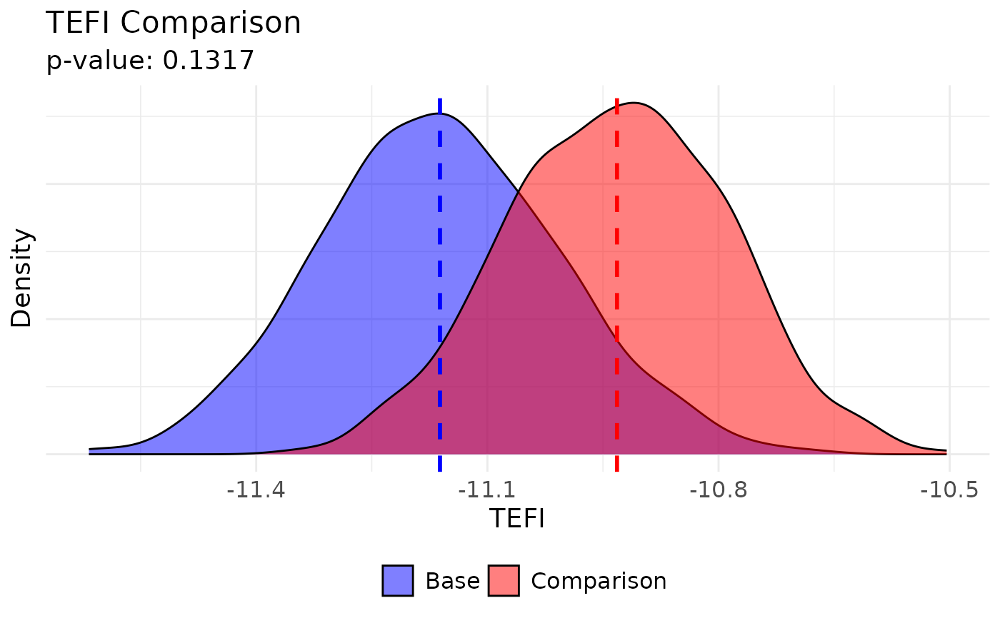
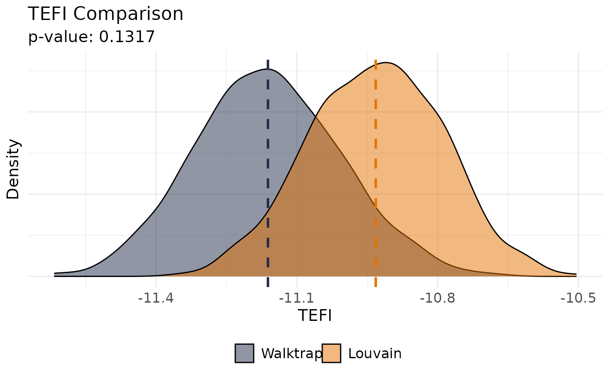

Compare Total Entropy Fit Index (tefi) Between Two Structures
Source: R/tefi.compare.R
tefi.compare.RdThis function computes the tefi values for two different structures using
bootstrapped correlation matrices from bootEGA and compares them using a
non-parametric bootstrap test. It also visualizes the distributions of tefi values
for both structures.
Arguments
- bootega.obj
A
bootEGAobject- base
Numeric (length = columns in original dataset). A vector representing the base structure to be tested
- comparison
Numeric (length = columns in original dataset). A vector representing the structure to be compared against the
basestructure- plot.TEFI
Boolean (length = 1). Whether the TEFI comparison and the p-value should be plotted. Defaults to
TRUE- ...
Additional arguments that can be passed on to
plot.EGAnet. SeeExamplesfor plotting arguments
Value
A list containing:
TEFI.dfA data frame containing the TEFI values for both structures
p.valueThe p-value from the non-parametric bootstrap hypothesis test
Details
The null hypothesis is that the TEFI values obtained in the bootstrapped correlation matrices for the base
structure are than the TEFI values obtained in the bootstrapped correlation matrices for the comparison structure.
Therefore, the p-value in this bootstrap test can be interpreted as follows:
If the p-value less than 0.05: TEFI values for the
basestructure tend to be lower than thecomparisonstructure, indicating that the former provides a better fit (lower entropy) than the latterIf the p-value is greater than 0.05: TEFI values for the
basestructure are not significantly lower than thecomparisonstructure, suggesting that both structures may provide similar fits or thatcomparisonmight fit better
Author
Hudson Golino <hfg9s at virginia.edu> and Alexander P. Christensen <alexpaulchristensen@gmail.com>
Examples
# Obtain data
wmt <- wmt2[,7:24]
if (FALSE) { # \dontrun{
# Perform bootstrap EGA
boot.wmt <- bootEGA(
data = wmt, iter = 500,
type = "parametric", ncores = 2
)} # }
# Perform comparison
comparing_tefi <- tefi.compare(
boot.wmt,
base = boot.wmt$EGA$wc, # Compare Walktrap
comparison = community.detection(
boot.wmt$EGA$network, algorithm = "louvain"
) # With Louvain
)

# Plot options (UVa colors)
plot(
comparing_tefi,
base.name = "Walktrap", base.color = "#232D4B",
comparison.name = "Louvain", comparison.color = "#E57200"
)
